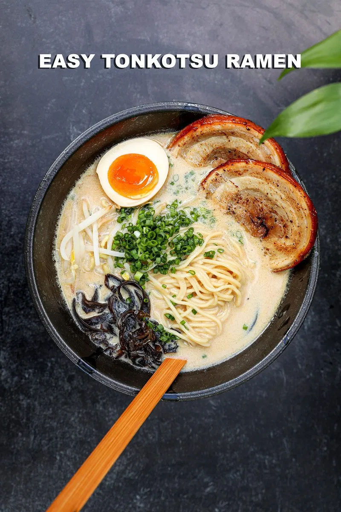
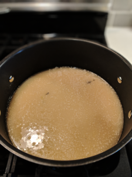
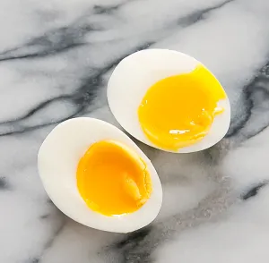
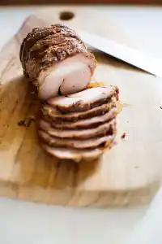
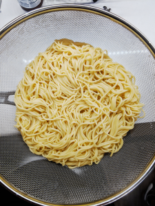

Tonkotsu Ramen

Easyi Tonkotsu ramen ready to warm your soul in 30 minutes!
Ah, our favorite Tonkotsu ramen recipe…with fall and winter fast-approaching, we’re digging out our cold weather
fall soup recipes. With a little shopping for specialty items, you can have a delicious bowl of ramen at your
disposal for months to come!
Where does Tonkotsu ramen come from? This ramen flavor was first created in southern Japan as an affordable fast
food for fish market workers. Tonkotsu ramen has since become a delicious staple of Japanese cuisine. Although
the authentic version is traditionally made by simmering pork bones for 8 hours, this quick recipe takes just 30
minutes. Sip on this unforgettable rich and milky noodle soup and be transported to Tokyo’s bustling metropolis.
We suggest customizing your bowls by adding toppings to this Tonkotsu Ramen recipe. Great additions include:
soft-boiled eggs, cooked slices of pork belly, pork tenderloin, pancetta, chicken breast, sautéed spinach, or
tofu! Eat like a Japanese local with Tonkotsu Ramen, the most classic and popular broth flavor in Japan!
When you get a chance to try this Tonkotsu ramen recipe, we would love to hear about your results in the
comments below. Some of these ingredients may be difficult to find in your local grocery store, so we have gone
ahead and added a few helpful links to specialty Amazon products below.
Happy cooking!
Ingredient list!
- 180 g Tonkotsu soup base (pork bone broth)
- 12 oz Ramen noodles
- 1 cup Kikurage mushrooms
- 1 cup Corn (cooked)
- 2 tbsp Sesame chili oil
- 4 Sheets nori or seaweed snack
- ¼ cup Sliced green onions
- 1 tsp Togarashi spice
- 4 Eggs
- 2 cups Sauteed spinach (optional)
Pick a protein!
- 6-8 oz Pork belly (thinly sliced)
- 8-12 oz Sliced pork tenderloin (thinly sliced)
- 8-12 oz Chicken breast (thinly sliced)
- 12 oz Tofu (thinly sliced)
- ½ lb Ground pork
How To Make This Tonkotsu Ramen Recipe - Step By Step!
Make Tonkotsu Broth
- Bring 8 cups of water to a boil in a large pot. Add tonkotsu soup base and stir until dissolved.
- Add kikurage mushrooms, reduce heat to low, cover, and simmer for at least 20-25 minutes as you continue
with the recipe.

Prep Ingredients
- (For the noodles & eggs) Fill a medium-large pot 3/4 full of water, cover, and bring to a boil on high heat.
(Optional) Cook Eggs
- Gently lower eggs into the medium pot of boiling water and boil for 7-10 minutes (7 for soft, 10 for hard-boiled). Prepare an ice bath for the eggs by adding 1/2 ice and 1/2 cold water to a medium bowl. Important: keep boiling water for step 5!
- When the eggs have cooked, place them in the ice bath for 2-3 minutes. Peel the eggs by cracking on a hard surface and rolling until shell becomes loose. Remove the shells and keep warm.

(Optional) Cook Protein
- If adding your own protein, cook during this step, cut into thin slices, and keep warm.
- If adding spinach, saute during this step and keep warm.

Cook noodles
- Add ramen noodles to the medium pot of boiling water from step 3 and cook for 3-4 minutes.
- Drain using a colander and rinse the noodles under warm water.

Plate & Serve
- Divide cooked noodles between soup bowls, ladle the tonkotsu broth over the noodles, and add your favorite toppings: corn, green onions, nori (seaweed), sesame chili oil, and togarashi (spicy!).
- (Optional) serve with halved eggs, prepared protein, and/or sauteed spinach.
- Enhance your experience with a playlist (takeoutkit.com/playlists).
Main Menu